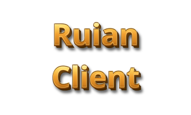

Loading
Fast
Recommended
Higher frame rates, a smaller download and faster loading. Needs a recent browser.
Compatible
For older browsers
Works in Safari and older versions of Chrome and Firefox, but runs slower.
Rust
Experimental
The game rewritten in Rust, drawn with WebGPU. Few Ruian modules yet, and some things may not work.
Choose Compatible only if Fast won't start in your browser.
The game needs JavaScript.